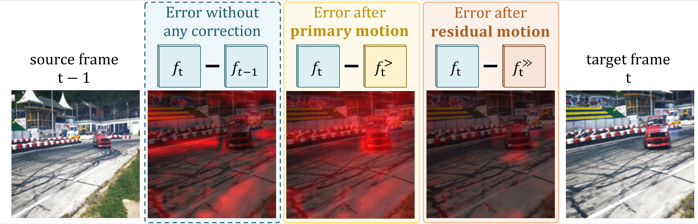
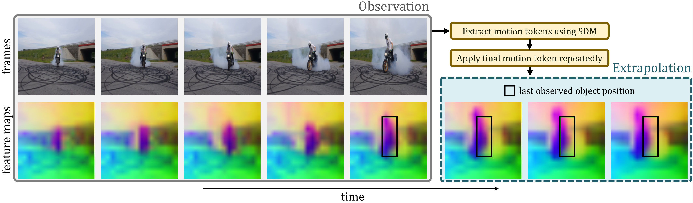
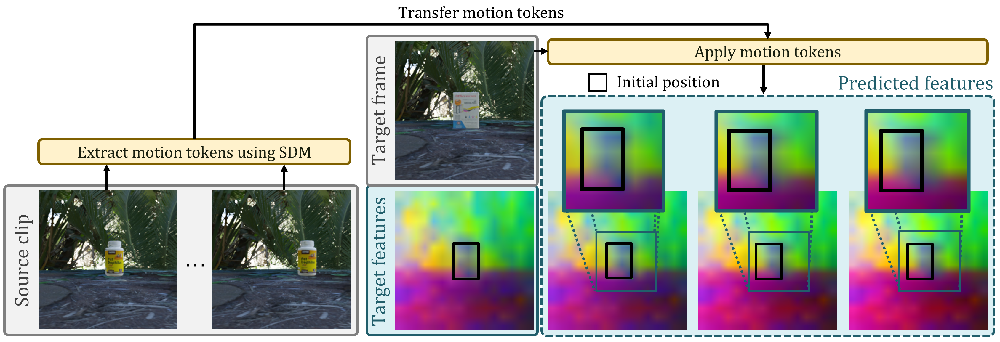

Stage-wise feature compensation

We learn structured dynamics representations from frozen image features by associating temporal change with primary and residual motion tokens.
Understanding motion in video is a fundamental challenge for visual learning, as frame-to-frame change entangles two sources of dynamics: camera motion and object motion. This decomposition has remained underexplored in representation learning, partly because these factors are tightly coupled in natural videos and difficult to supervise separately. Yet recovering it is important for learning robust motion representations that separate meaningful object dynamics from camera-induced variation. We study whether such structured motion representations can be recovered from frozen features of a pretrained image vision transformer. We propose the Structured Dynamics Model (SDM), which explicitly separates the dominant source of temporal change from residual dynamics through future-feature prediction, rather than representing video change with a single entangled latent or with unstructured, spatially dense transition tokens. Training combines self-supervised learning on real video with weak supervision of scene dynamics on synthetic Kubric data. We evaluate SDM on ProbeMotion, a new evaluation suite spanning synthetic and real videos with camera motion, object motion, and combined dynamics. SDM outperforms backbone baselines using global CLS or average-pooled features, and compares favorably to strongly supervised representations such as VGGT on several probes, despite using substantially weaker supervision. These results suggest that pretrained image models can be readily repurposed into structured video-dynamics representations, providing a useful inductive bias for learning and analyzing latent video dynamics.
The Structured Dynamics Model (SDM) predicts how frozen visual features evolve over time. It first extracts a recurrent primary token p to explain the dominant source of change, then extracts a residual token r to model the remaining dynamics.
ProbeMotion evaluates motion representations across synthetic and real camera motion, object motion, and motion-adjacent action recognition using linear probes.
| Method | Kubric cam ↓ | Kubric obj ↓ | DL3DV ↓ | Static DAVIS ↓ | Static YTVOS ↓ | CameraBench ↑ | SSv2-110k ↑ |
|---|---|---|---|---|---|---|---|
| VGGT avg. feat. | 0.09 | 0.32 | 0.56 | 0.78 | 0.79 | 82.9 | 15.5 |
| VGGT cam. token | 0.03 | 0.43 | 0.53 | 0.71 | 0.81 | 88.7 | 13.5 |
| DA3 avg. feat. | 0.11 | 0.40 | 0.55 | 0.87 | 0.89 | 83.3 | 14.0 |
| DA3 cam. token | 0.04 | 0.58 | 0.53 | 0.87 | 0.91 | 84.4 | 12.2 |
| Pi3X avg. feat. | 0.07 | 0.38 | 0.52 | 0.52 | 0.75 | 87.9 | 19.8 |
| Pi3X avg. regs. | 0.08 | 0.45 | 0.53 | 0.61 | 0.77 | 85.7 | 12.7 |
| DeltaTok | 0.29 | 0.35 | 0.65 | 0.69 | 0.75 | 89.6 | 13.5 |
| AVG-pool | 0.96 | 0.93 | 1.04 | 0.78 | 0.91 | 67.0 | 2.3 |
| CLS | 1.16 | 0.78 | 1.09 | 0.90 | 1.05 | 68.6 | 14.9 |
| SDM | 0.16 | 0.19 | 0.59 | 0.87 | 0.71 | 85.3 | 23.1 |
Regression results on Kubric, DL3DV, static DAVIS, and static YTVOS are reported as standardized MSE. Classification results on CameraBench and SSv2-110k are reported as top-1 accuracy in %. Light-grey entries indicate strongly supervised 3D/geometry models. Bold and underlined numbers indicate the best and second-best results among methods without explicit geometric supervision.
SDM outperforms DeltaTok on five of seven ProbeMotion tasks despite using a smaller training budget and lower-resolution inputs. It also improves over CLS and average-pooled DINOv2-with-register baselines on most tasks, suggesting that structured future-feature prediction turns frozen image features into stronger motion representations. SDM performs especially well across motion probes and achieves the strongest SSv2-110k action accuracy among methods without explicit geometric supervision.
In addition to quantitative results on ProbeMotion, we qualitatively inspect whether SDM learns structured and reusable motion representations. The visualizations below show how the primary and residual prediction stages explain complementary changes, and whether learned motion tokens can be reused beyond the observed transition.



@misc{knobel2026sdm,
title={Self-Supervised Learning of Structured Dynamics from Videos},
author={Lukas Knobel and Andrew Zisserman and Yuki M. Asano},
year={2026},
eprint={2607.21576},
archivePrefix={arXiv},
primaryClass={cs.CV},
url={https://arxiv.org/abs/2607.21576},
}